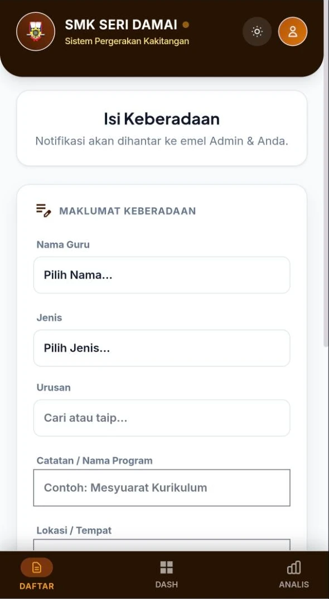

Percuma • Lebih 643 sekolah sudah guna
“Cikgu ada di mana?”Kini satu sekolah tahu jawapannya, terus dari telefon.
eGerak Pro merekod tugas luar, kursus, mesyuarat dan cuti guru serta kakitangan. Pentadbir nampak keberadaan semua orang dalam satu paparan, dan laporan bulanan sedia untuk dicetak.
Tiada aplikasi perlu dipasang. Buka sahaja di telefon atau komputer.



Notifikasi emelTerus kepada admin & guru
Laporan bulananSedia untuk dicetak
- RM0
- Sistem dikongsi percuma untuk sekolah
- 643+
- Sekolah sudah menggunakan eGerak Pro
- 3
- Menu sahaja: Daftar, Dash, Analis
- 0
- Aplikasi perlu dimuat turun
Sudah digunakan
643+
Lebih 643 sekolah sudah menggunakan eGerak Pro.
Dari sekolah kebangsaan hingga kolej tingkatan enam, seluruh Malaysia. Giliran sekolah anda pula.
Tempah Untuk Sekolah SayaSenarai tempahan sekolah
Lihat antara sekolah yang telah menempah ()
Kelebihan
Buku log di pejabat tak boleh menjawab dari bilik mesyuarat.
Rekod manual melambatkan semua orang: guru perlu ke pejabat, kerani perlu menyalin, dan pentadbir masih perlu bertanya. Bezanya begini.
| Perkara | Cara lama | Dengan eGerak Pro |
|---|---|---|
| Merekod keluar | Cari buku log, tulis tangan, tunggu tandatangan | Isi borang ringkas di telefon |
| Mencari guru | Selak buku atau tanya dari bilik ke bilik | Senarai hari ini terpapar di Dash |
| Guru ganti | Pesan mulut, kadang-kadang terlepas pandang | Guru ganti menerima emel makluman |
| Kira kehadiran | Kira satu-satu hujung bulan, mudah tersilap | Peratus dan graf dikira automatik |
| Laporan | Salin semula ke fail, ambil masa berhari-hari | Cetak laporan atau muat turun Excel |
Ciri-ciri
Tiga menu. Satu sekolah tersusun.
Guru tak perlu latihan panjang. Semua yang diperlukan ada di bar bawah skrin.
Untuk guru & kakitangan
Isi keberadaan tanpa perlu ke pejabat.
Pilih nama, pilih jenis urusan, dan hantar. Kalau kelas perlu diganti, nyatakan guru gantinya dalam borang yang sama.
- Pilihan urusan rasmi, tidak rasmi dan cuti sedia ada
- Emel notifikasi dihantar kepada admin dan guru sendiri
- Guru ganti turut dimaklumkan melalui emel
Untuk pentadbir & pejabat
Siapa tiada hari ini? Sekali pandang sudah tahu.
Dash meringkaskan jumlah pergerakan hari itu dan menyenaraikan setiap kakitangan bersama urusan mereka, sama ada sepenuh hari atau beberapa jam.
- Tapis mengikut kumpulan, seperti Guru atau Guru PPKI
- Pilih tarikh untuk menyemak rekod hari lain
- Beza cuti dan urusan rasmi dengan label warna
Untuk pengetua & pengurusan
Corak kehadiran sebulan dalam satu graf.
Pilih bulan dan tahun. Sistem mengira peratus kehadiran dan melukis trend harian, jadi hari yang paling ramai guru tiada mudah dikenal pasti.
- Peratus kehadiran dikira automatik
- Graf tiada dan hadir bagi setiap hari
- Pecahan mengikut kategori ketidakhadiran
Untuk admin sistem
Laporan sedia, dan rupa sistem milik sekolah anda.
Keluarkan rekod bila diperlukan. Letak nama dan logo sekolah sendiri, kemudian pilih warna yang sepadan. Cuba tekan warna pada contoh ini.
- Cetak laporan atau muat turun fail Excel
- Tambah atau padam nama guru bila ada pertukaran
- Tetapan pentadbir dikunci dengan kata laluan
SEKOLAH ANDASistem Pergerakan Kakitangan
Warna tema
Cetak LaporanAnalisis bulanan sedia cetak
Muat Turun ExcelRekod mengikut julat tarikh
Kalkulator
Berapa banyak masa sekolah anda boleh jimat?
Anggaran masa dijimatkan setahun
152 jam
Bersamaan 19 hari bekerja
Anggaran untuk 190 hari persekolahan dan 8 jam sehari, dengan andaian satu rekod dalam sistem mengambil kira-kira seminit.
Cara mula
Tiga langkah untuk mula guna.
Isi borang tempahan
Nyatakan minat sekolah anda melalui borang ringkas. Tiada bayaran.
Sediakan sekolah anda
Masukkan nama dan logo sekolah, senarai guru, dan pilih warna tema.
Kongsi pautan dengan guru
Guru buka di telefon dan terus boleh merekod. Dash dan analisis terisi dengan sendirinya.
Harga
Satu pakej sahaja: percuma.
eGerak Pro ialah perkongsian daripada guru untuk sekolah. Tiada peringkat berbayar untuk difikirkan.
Apa yang sekolah anda dapat
- Borang keberadaan guru
- Dash pergerakan harian
- Rekod guru ganti (MMI)
- Notifikasi emel automatik
- Analisis kehadiran bulanan
- Cetak laporan & muat turun Excel
- Logo dan nama sekolah sendiri
- 7 pilihan warna tema
Soalan lazim
Mungkin ini yang anda tertanya-tanya.
Betul ke percuma?
Betul. eGerak Pro dikongsi secara percuma untuk kegunaan sekolah. Anda hanya perlu mengisi borang tempahan.
Perlu muat turun aplikasi?
Tidak. Sistem dibuka terus melalui pelayar web di telefon atau komputer, jadi tidak mengambil ruang simpanan telefon.
Guru yang kurang mahir teknologi boleh guna?
Boleh. Borangnya ringkas: pilih nama, pilih jenis dan urusan, kemudian hantar. Hanya ada tiga menu untuk diingat.
Di mana data sekolah disimpan?
Rekod disimpan dalam hamparan Google Sheets milik sekolah anda, manakala tetapan pentadbir dikunci dengan kata laluan.
Bagaimana kalau tersilap isi?
Rekod boleh dikemas kini atau dipadam selepas pengesahan nombor kad pengenalan guru berkenaan.
Bagaimana kalau ada guru baharu atau bertukar?
Admin boleh menambah atau memadam nama guru terus daripada Tetapan Pentadbir.
Saya ada soalan lain. Tanya di mana?
Sertai group Telegram App Sekolah Malaysia untuk maklumat lanjut.
Bersedia menutup buku log itu?
Sertai lebih 643 sekolah yang sudah menggunakan eGerak Pro. Kalau masih ada soalan, sertai group Telegram untuk maklumat lanjut.